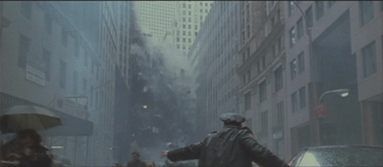

|
MICHAL KOSAKOWSKI
JUST LIKE THE MOVIES | 2005 | 21’
Format: DVD
Drehbuch: Michal Kosakowski
Schnitt: Michal Kosakowski
Musik: Paolo Marzocchi
Produktion: Michal Kosakowski

"Fast alle von uns sahen die Ereignisse des 11. September 2001 im Fernsehen. Wir kennen diese Bilder aus dem Kino, es war damals nahezu unmöglich, sie als reales Geschehen zu begreifen, noch weniger es als solches in diesem Moment zu akzeptieren.
Michal Kosakowski greift an diesem frühen Punkt ein: einige Minuten nach den Ereignissen entsteht die erste Ideenskizze zu seinem Projekt
"Just Like The Movies".
Er sucht in mehr als 600 Hollywoodfilmen, die vor 2001 produziert wurden, nach den Bildern – und findet in 52 Filmen die gesamten Ereignisse jenes Tages im September 2001. Seine Rekonstruktion beginnt." - Uli Aigner
Michal Kossakowski, geb. 1975 in Szczecin, Polen. Er ist Regisseur, Kameramann und Cutter von zahlreichen Kurz-, Experimental- und Dokumentarfilmen. Sein Werk umfasst über 100 Filme und wurde auf internationalen Filmfestivals und Ausstellungen gezeigt und vielfach ausgezeichnet. Von 1997 bis 2000 arbeitete er als freischaffender Künstler und unabhängiger Filmemacher in der Fabrica, dem von Oliviero Toscani und Luciano Benetton gegründeten International Center for Research in Arts of Modern Communication in Italien. Zusammenarbeit mit Uli Aigner, Paolo Marzocchi, Goran Mimica, Joseph Denize und Francis Kuipers. Er lebt und arbeitet in München, Deutschland und Wien, Österreich.
Filme (Auswahl): After Death 1992 | Face of the Death 1992 | No Sugar Added 1996 | Airwar Hong Kong 1996 | Holy War 1999 | VAL – Vehicles for Another Landscape 2001 | Gipsy Express 2002 | Movimento 2003 | Wait a Minute 2004 | Ghostakademie – Uli Aigner 2005 | Just Like the Movies 2006 | Fortynine 2007
zurück
|